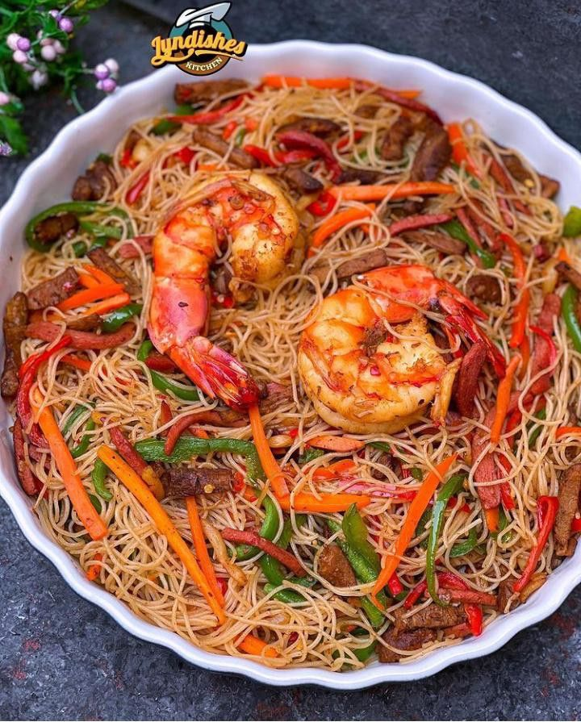

Nigerian Spaghetti is not your regular pasta dish — it is a bold, spicy, and flavourful meal cooked the Nigerian way. Tossed in a rich tomato and pepper sauce, seasoned to perfection with Nigerian spices, and served with your choice of meat or eggs, this dish is a favourite among Nigerian youths and families alike. Once you taste it the Nigerian way, there is no going back.